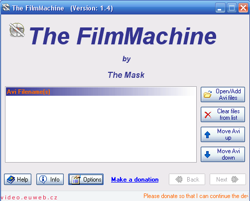

The FilmMachine
1. obrazovka • 2. obrazovka • 3. obrazovka • 4. obrazovka • Tvorba menu
Závěr
Úvodem
O programu jsem se dozvěděl v jednom z témat na zdejší poradně. Poté jsem si přečetl návod na CD-R a docela mě zaujal. Proto jsem sepsal tento návod. O tom, jak to dopadlo (a že né růžově), píšu na konci.Získání programu
Program The FilmMachine slouží k převodu AVI na formát (S)VCD nebo DVD. Umí i titulky. Před spuštěním budete potřebovat program stáhnout (13,5MB). Ve FilmMachine je integrovaný MPEG kodek Quenc, ale můžete si stáhnout i Cinema Craft Encoder (2,18MB). Použít se dá i Canopus Procoder, ale ten se nedá nikde stáhnout (ani zkušební verze). Škoda jen, že se nedá použít nějaký Indeo kodek.
Čeština není, nesehnal jsem ji (stav k 9. září 2005).
Seznámení
Říkla jsem si, jak musí být program pro převod AVI na DVD složitý. Po zhlédnutí úvodního okna FilmMachine moje přesvědčení zmizelo, základní okno programu nevypadá vůbec děsivě.
Co co dělá? Takže po pravé straně si můžeme všimnout čtyř tlačítek.
- Open/Add Avi files - do seznamu přidává AVI soubory. Umí jich přidat víc najednou.
- Clear files from list - maže ze seznamu soubory. Smaže bohužel všechny, po jednom to neumí.
- Move Avi up, Move Avi down - posouvá v seznamu soubory. Up nahoru, down dolů.
U spodu okna je pět tlačítek a odkaz. Popíšeme si i je
- Help - nápověda. Otevře to v prohlížeči stránku s nápovědou. Je to anglicky. Původně jsem to chtěl přeložit, pak mi došlo, že neumím angličtinu na takové úrovni, aby to šlo bez slovníku.
- Info - taková tabulka o tom, kdo FilmMachinu udělal, jsou tam i odkazy na jiné video editory.
- Options - možnosti, nastavují se hlavně možnosti encoderů
- Make a donation - přispějte autorovi programu
- << Back - zpět v "kouzelníkovi"
- Next >> - V "kouzelníkovi" vpřed. Funguje to až po přidání souboru do seznamu
Přidání souborů a infomace o nich
Takže máme soubor nebo soubory AVI. Ty vložíme do seznamu po kliknutí na Open/Add Avi files. Můžete přidat i více souborů najednou. Poté se v seznamu zobrazí informace o vybraném souboru.
Co co znamená?
Tučně navrchu
- Filename - jméno souboru
- Filesize - velikost souboru
- Streams - počet stop (například audio a video, tzn. 2. Pokud byste u AVI měli dvě zvukové stopy, byla by tam trojka)
Video Info
- Compression Codec - čím bylo video komprimováno (jakým kodekem)
- Frames - počet snímků, pokud tohle číslo vydělíte tím pod tím, získáte dobu videa. Nebo si to můžete přečíst níž
- Frame Rate - počet snímků za sekundu
- Duration - délka videa, nejdřív ve vteřinách, v závorce hodiny, minuty. vteřiny
- Resolution - rozlišení a poměr videa (v závorce)
- Avg. Bitrate - průměrný datový tok
- Keyframes - počet klíčových snímků. V závorce je, kolikátý snímek je klíčový. Tzn., že každý 292. snímek je klíčový
Audio Info
- Wave Codec - kodek, kterým bylo kódováno audio
- Avg. Bitare - průměrný datový tok audia
- Sampling rate - vzorkovací frekvence
- Channels - počet kanálů (stereo jsou dva)
- Audio Delay - zpoždění zvuku
Change theme znamená změnit vzhled. Nevím, jak to vrátit zpět na původní.
Tvoříme...
Kouzelník - 1. obrazovka
Takže klikneme na tlačítko Next >> a dostaneme se na první obrazovku průvodce převodem (dále jen kouzelník):- Default output folder - kam to má ukládat výstupní soubory
- Output file type - zvolíte si, jaký má být výstupní soubor.
- Encoders - Zvolíte si, jakým kodekem budete video převádět. QuEnc je v betě a je prý nestabilní. Mně zase nefungoval Cinema Craft Encoder. A teď babo raď!
- Aspect ratio - poměr stran videa. I u filmů 16:9 nechávám 4:3. Nevím, o co tím přicházím, zdá se mi, že o nic
- Arrange method - nevím, jak to napsat, to, co si pod tím představuju, je dost nejasné. Prostě to nějak upravuje video.
- Fullscreen - celá obrazovka, podle mě to nedělá nic
- Add borders, keep aspect ratio - přidá okraje, striktně dodržuje zvolený formát souboru
- Crop video, keep aspect ratio - ořízne video, striktně to dodržuje poměr videa
- Edit Avisynth script file - zpracovávat Avisynthem posílaný soubor. Moc ověřené to nemám, takže moc neporadím.
- NTSC to PAL/PAL to NTSC - převod z americké televizní normy NTSC do evropské PAL a obráceně
- Audio downsample 48 -> 44.1 - sníží vzorkovací frekvenci audia z 48kHz na 44.1 kHz. Nevím, jaký to má význam
- Audio language - jazyk audia. Docela často by tam mělo být Czech
Klikněte na Next >>. Tak se dostanete na druhou obrazovku kouzelníka
Kouzelník - 2. obrazovka
- CD size - velikost CD (DVD), na které chcete film vypálit
- CD count - počet CD (DVD), na které chcete pálit
- Audio bitrate - datový tok audia
Trochu jsem nepochopil, jak se počítá ten průměrný datový tok. Při přidání CD se to nemění, při změně CD se to nemění. Reaguje až u DVD.
- Don't burn DVD - nepálit DVD. U mě automaticky zaškrtlé, potřebujhe to Nero 6.3.1.4 a výš. A já mám pořád jenom 5.5.
- Don't use PBC - nepoužívat funkci PBC. Nevím, co to to PBC je
- Movie title - název filmu
Kouzelník - 3. obrazovka
Na této obrazovce přidáváte titulky. Aby to fungovalo, musíte zaškrtnout možnost Use subtitles.
Kind of Subtitles
- Permanent subtitles - titulky napořád ve filmu. Ve VCD a SVCD nutnost. U DVD jak chcete, ale nedoporučuju
- Selectable subtitles - vybírané titulky, lze zvolit pouze pokud chcete dělat DVD. Doporučuju tuhle možnost
Teď je problém v tom, že když zvolíte Permanent subtitles, budete mít jinou nabídku, než když zvolíte Selectable subtitles. Takže to popíšu obojí.
- Permanent subtitles
-
- Color Primary, Color Secondary, Color Tertiary, Color Shadow - nastavení barev titulkům
- Vertical Margin -
- Bottom Margin -
- Border -
- Tlačítko s "A" - zvolení písma. Bacha! Musíte změnit skript na Středoevropský
- Clear files from list - smaže titulky z listu
- Shadow - stín písma, nejlepší je nastavit to na nulu. Mně se to tak líbí nejvíc
- Position - jestli chcete titulky zobrazovat dole (Bottom) nebo nahoře (Top)
- Selectable subtitles
- Show subtitles s default - volíte, zda se má při přehrání filmu titulky automaticky zapnout
- Bottom Margin - odsazení od spodu
- Tlačítko s "A" - volíte kódování češtiny, písmo a jeho velikost. S kódováním by mohl být problém, většinou je to ale CP1250.
- Position - Titulky nahoře (Top), dole (Bottom)
Přidání titulků probíhá tak, že kliknete do pole pod nápis Subtitle Filename. Vpravo se objeví tlačítko se složkou, na to kliknete a vyberete titulky. V poli vpravo vybíráte jazyk. Čeština je asi čtvrtá od spodu, nemusíte rolovat.
Kouzelník - 4. obrazovka
Poslední obrazovka, dá se zde udělat DVD menu. Dělá se to po kliknutí na nápis Create DVD menu.
Můžete si taky zvolit, zda chcete po dokončení vypnout program (Exit after finished) nebo rovnou počítač (Shutdown Windows).
Tlačítkem "Make DVD" zahájíte převod.
Tvorba menu
Klikněe na "Create DVD menu", objeví se obrazovka:
{kind=link}
Docela jednoduché okno. Co co znamená?
- Change Background - změnit obrázek na pozadí
- Button Text - Text na tlačítku, typicky "Přehrát film"
- Change Button Font - změna nastavení písma
- Button text Color- Barva nápisu na tlačítku
- Highlight Color - Barva rámečku kolem tlačítka. Průhledná nejde nastavit
- Select Color - netuším, snad to ani nic nedělá
Až se vám menu bude dostatečně líbit, dejte ok a poté Make DVD. A modlete se, ať to funguje.
Závěrem
Takže, jak to bylo u mě:
- Poprvé jsem film převedl, spustil. Nešli vypínat titulky. Kvalita obrazu nic moc. Za to ale může kodek.
- Podruhé už to nešlo. Potřetí a povíckrát taky ne.
Takže? Takže zklamání!!!
Video na PC: Vytvořeno v roce 2005 a víc. Autorem je Jan 'Šlaha' Šlahora. Veškerá práva vyhrazena autorům článků. Pokud není uvedeno jinak, jsem to já.